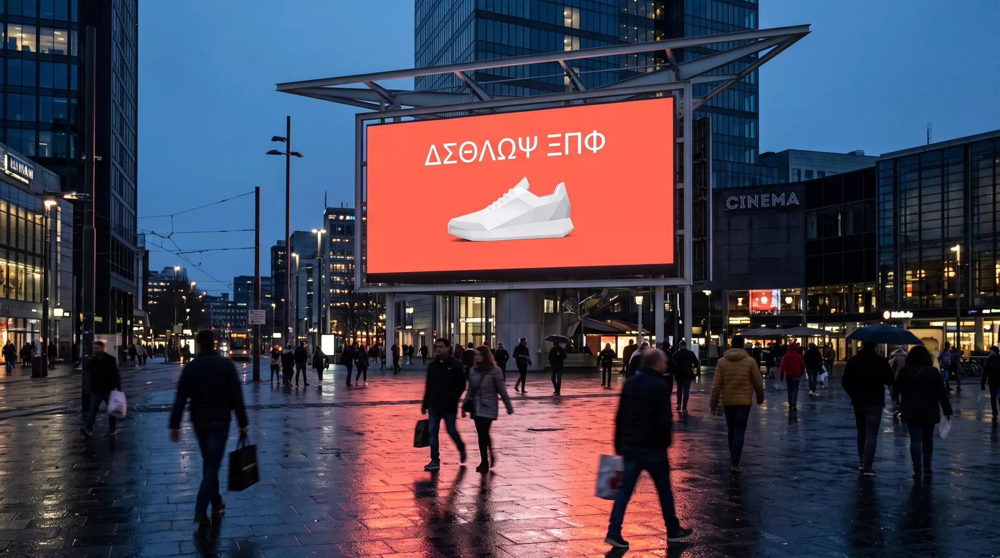
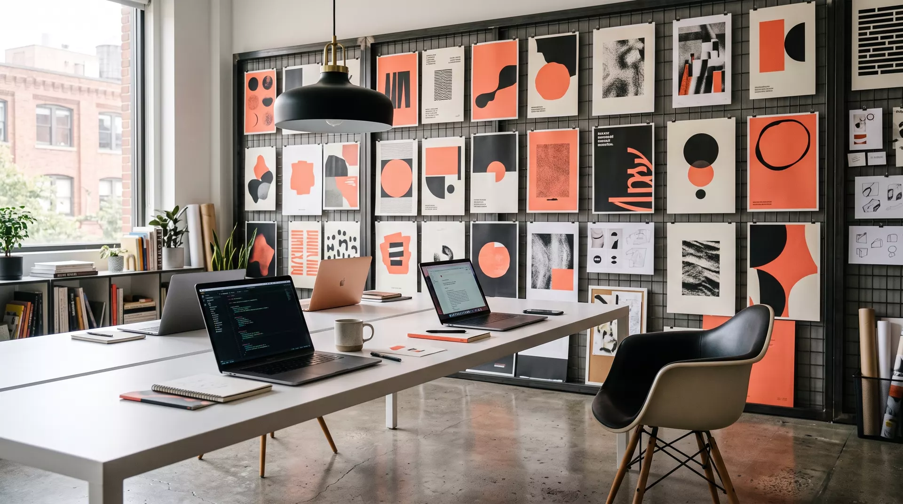

Alpina Privatbank
Rebranding und Plakatkampagne. Ein Satz pro Wand, keine Bildwelt, keine Fussnoten.
+0%
Markenerinnerung
Marketing ohne Lärm · Zürich
Wir machen aus Botschaften Ansagen.

Rebranding und Plakatkampagne. Ein Satz pro Wand, keine Bildwelt, keine Fussnoten.
Dachkampagne für Strom, Wasser und Wärme. Drei Produkte, eine Stimme, null Fachjargon.
Lancierung in drei Quartieren. Budget klein, Botschaft kleiner: «Kaffee. Fertig.»
Direktvertrieb statt Zwischenhandel. Die ganze Kampagne bestand aus neun Wörtern.
Ansatz · Prinzip eins
Ansatz · Prinzip zwei
Ansatz · Prinzip drei

Sieben Leute, ein Raum, eine Wand voller Entwürfe — und ein Papierkorb, der wichtiger ist als jeder Beamer.
Wir nehmen pro Jahr acht Mandate an. Nicht mehr. Wer alles macht, macht nichts richtig — und wir sind hier, um eine Sache richtig zu machen.
Keine Portraits. Monogramme genügen.